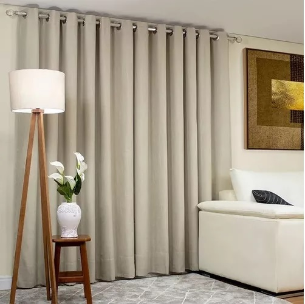
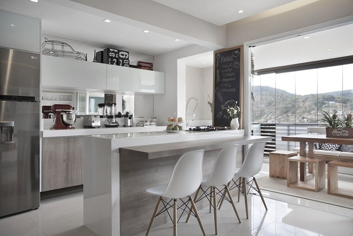
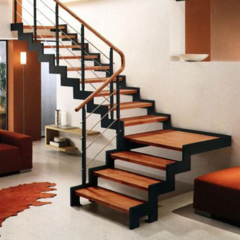

Um dia você e seus amigos decidem brincar de esconde esconde, você está se escondendo, não seja pego

Você consegue se esconder muito bem, mas tem que trocar de esconderijo para onde ir ?
você consegue se esconder, mas tem que mudar de local, para onde?

você consegue se esconder muito bem

Você foi encontrado,foi muito é paia.
você consegue se esconder muito bem
a porta estava trancada

Você se depara com um caminho bifurcado.

você consegue se esconder, agora vá para o sotão
você conseguiu se esconder, agora se salve.

era a direita irmão, sempre será a direita.
você se salvou
Retornando e escolhendo o caminho à direita você consegue se esconder e já podese salvar.